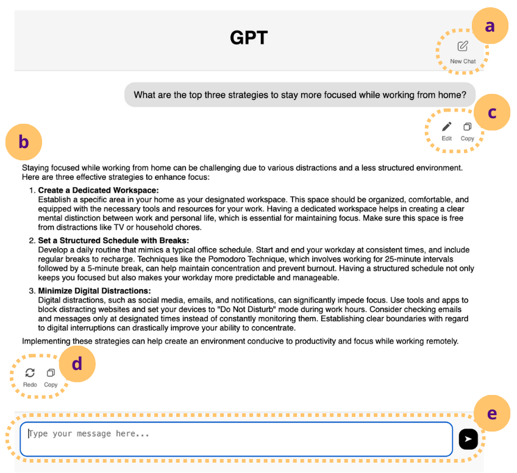

The research question
Fast responses are a common goal for AI products. But does reducing the wait also improve users’ experience? And does the answer change when people create content rather than ask for advice?
Our team examined response timing as a design variable. The study compared behavior and perceived response quality while holding the underlying model and streaming speed constant.
The central finding
A faster response was not always perceived as a better response. Timing affected some quality ratings, while task type shaped prompting behavior.
How the study worked
Participants were randomly assigned to one of six conditions: a creation or advice task category, paired with a 2-, 9-, or 20-second delay before the response began. Each person completed three tasks within their assigned category.
The final analysis included 240 U.S. adults who used AI assistants at least monthly, after technical, attention, and latency-fidelity exclusions. Behavioral records included new prompts, edits, regeneration, copy/paste, and new conversations.

Analysis used aligned-rank-transform ANOVA and adjusted contrasts for quantitative outcomes. The paper also reports thematic analysis of explanations from 140 participants who noticed delays.
What the evidence showed
1. Response timing changed some perceptions.
Responses beginning after 9 seconds were rated more useful than those beginning after 2 seconds: 6.44 versus 6.19 on a seven-point scale (p = .021). Both the 9- and 20-second conditions were rated more thoughtful than the 2-second condition.
How thoughtful did the response feel?
Mean ratings on a 1–7 scale. Bars share a zero baseline.
Perceived thoughtfulness is not a measure of accuracy.
| Delay | Mean | 95% confidence interval |
|---|---|---|
| 2 seconds | 5.76 | 5.50–6.02 |
| 9 seconds | 6.09 | 5.89–6.29 |
| 20 seconds | 6.11 | 5.93–6.29 |
Thoughtfulness: 2 vs. 9 seconds, p = .008; 2 vs. 20 seconds, p = .040. The 9 vs. 20 second difference was not significant. No other pairwise usefulness difference was significant.
2. Task type shaped behavior.
The task-type difference in prompting was significant (p = .004). The study did not detect a significant latency effect on prompting or other logged actions.
3. Feeling thoughtful is different from being accurate.
Among the 140 participants who noticed delays, 43 interpreted waiting as a sign of AI deliberation. The study did not detect a significant effect on perceived trustworthiness or workload. These findings call for careful interpretation of quality ratings.
Implications for product decisions
These are recommendations derived from the research; the study does not report a shipped product change.
- Evaluate timing with more than speed. Pair latency metrics with task success, behavioral measures, and perceived quality.
- Segment by task. Creation and advice tasks can produce different interaction patterns, even in the same interface.
- Keep status feedback truthful. Test progress communication when waiting is unavoidable, including whether users mistake waiting for better reasoning.
What I would test next
In a real workflow, compare truthful progress feedback and user-controlled pacing. Measure task completion, output quality, and calibrated reliance alongside experience ratings. A hospital or financial workflow would require its own validation, especially where delays carry a cost.
Limits and interpretation
The experiment tested three onset delays, one underlying model, and a fixed streaming speed. Participants were experienced AI users completing controlled tasks. The results do not establish an optimal delay or show that intentionally slowing a system improves real-world outcomes.
Perceived thoughtfulness is not demonstrated accuracy. A nonsignificant difference also does not establish that two conditions are equivalent.
Source and collaboration
Felicia Fang-Yi Tan, Moritz A. Messerschmidt, Wen Yin, and Oded Nov. The Impact of Response Latency and Task Type on Human-LLM Interaction and Perception. Proceedings of the 2026 CHI Conference on Human Factors in Computing Systems.
I am a co-author of this collaborative study. Methods and findings on this page describe the team’s research. CHI is ACM’s conference on human factors in computing systems.
Study design: pp. 3–7. Results: pp. 8–10. Discussion and limitations: pp. 13–14. Charts on this page redraw reported aggregate values.